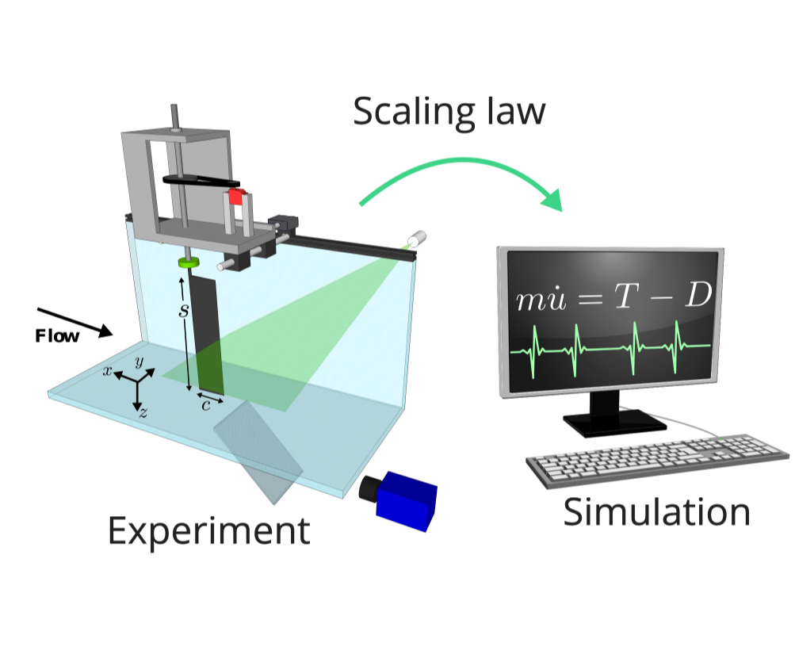

D. Floryan, T. Van Buren, and A. J. Smits, Acta Mechanica Sinica (2017), 33(4), 725–732
doi: 10.1007/s10409-017-0694-3
arXiv: 1703.00971
Fish have been observed to swim intermittently, coasting freely in between individual bursts of flapping. We use experiments to measure the forces and energetics of such motions, and our scaling theory enables us to simulate the dynamics from our static experimental measurements. We find that individual bursts of motion can be treated independently, and that intermittent swimming is generally energetically advantageous (unless metabolic losses are high).
Experiments are reported on intermittent swimming motions. Water tunnel experiments on a nominally two-dimensional pitching foil show that the mean thrust and power scale linearly with the duty cycle, from a value of 0.2 all the way up to continuous motions, indicating that individual bursts of activity in intermittent motions are independent of each other. This conclusion is corroborated by particle image velocimetry (PIV) flow visualizations, which show that the main vortical structures in the wake do not change with duty cycle. The experimental data also demonstrate that intermittent motions are generally energetically advantageous over continuous motions. When metabolic energy losses are taken into account, this conclusion is maintained for metabolic power fractions less than 1.